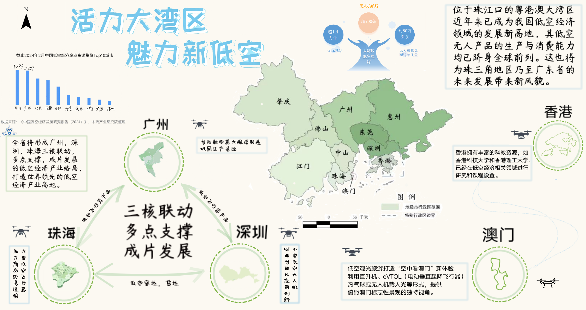
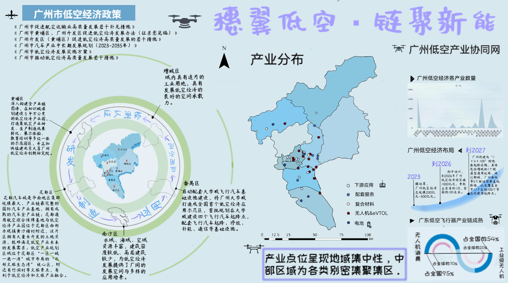
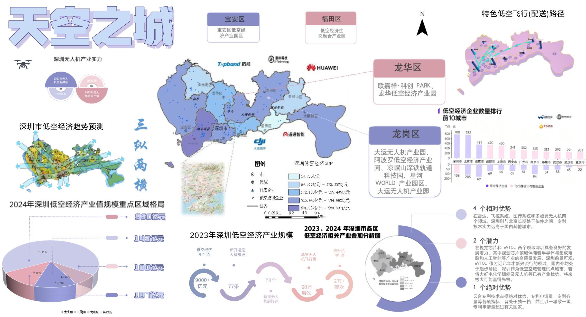
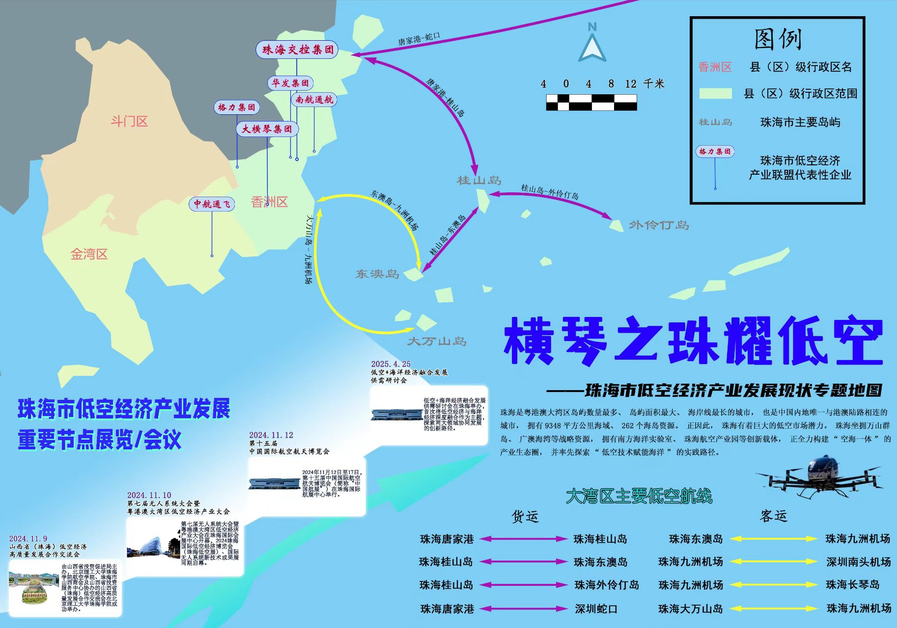
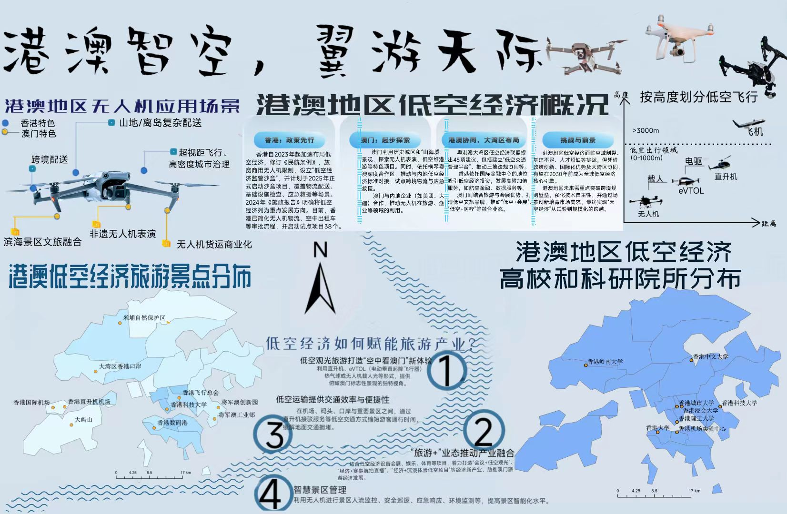
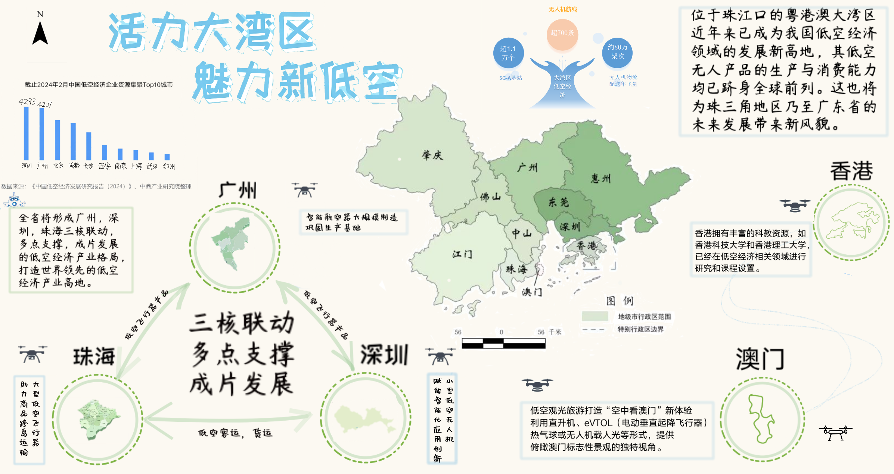
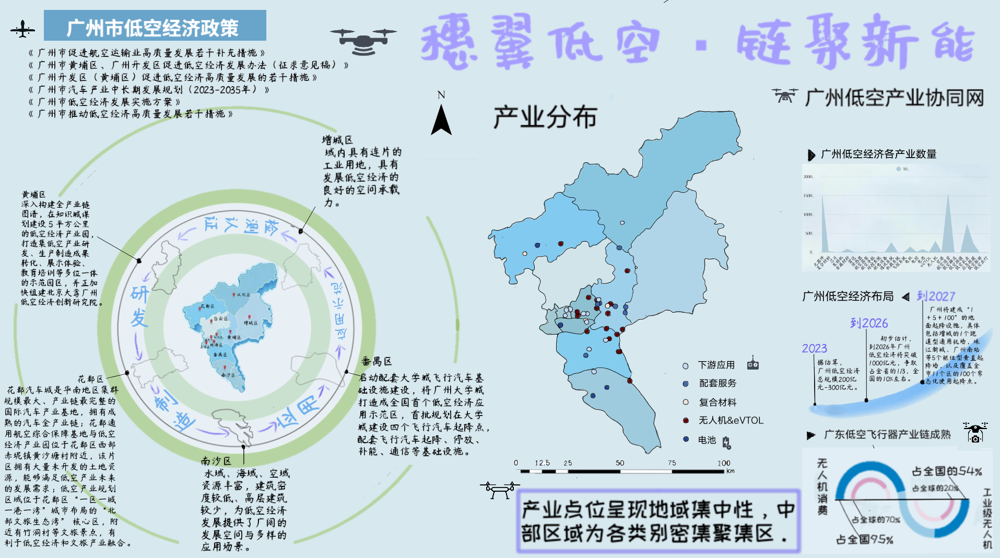
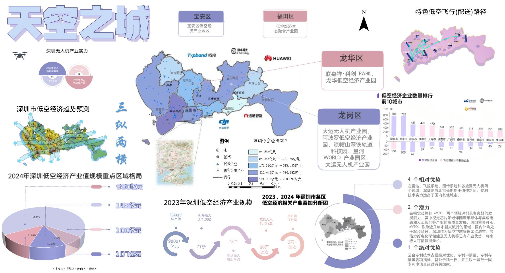
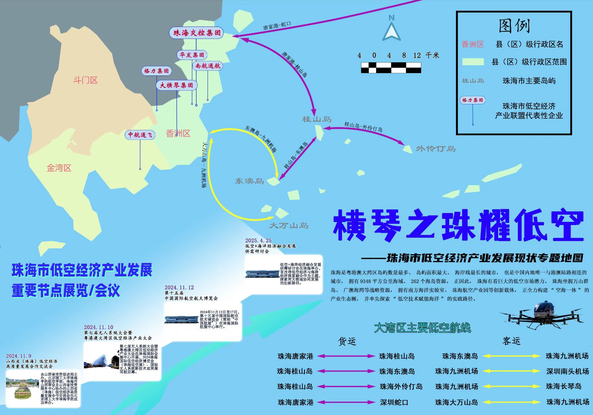
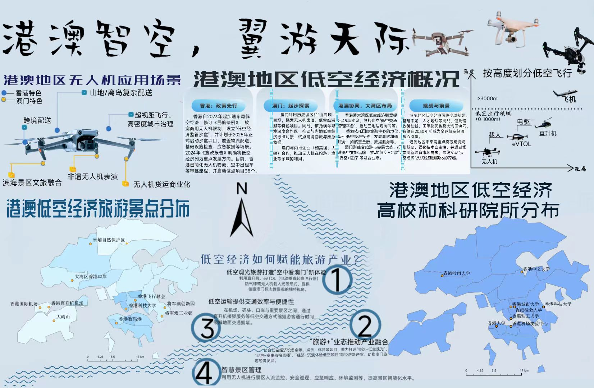
作者：唐浩珺，刀会，姚丽芬，步文峰
指导：张宝一
Authors: Haojun Tang, Hui Dao, Lifen Yao, Wenfeng Bu
Supervisor：Baoyi Zhang
We display an atlas consisting of several interesting thematic maps, covering the area of the Guangdong-Hong Kong-Macao Greater Bay Area (GBA). The area includes the city of Hong Kong, Macao, Guangzhou, Shenzhen, Zhuhai, Foshan, Huizhou, Dongguan, Zhongshan, Jiangmen and Zhaoqing.
The maps focus on the Low-Altitude Economy Industry in the GBA, including the relative GDP, major UAV routes, the tendency of development, etc.
If you would like to use the altas for education or popularizing, please be so kind to cite us.
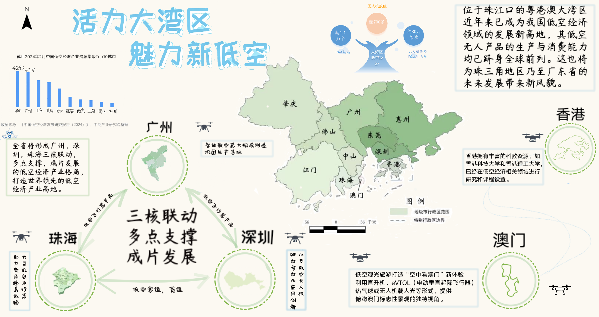
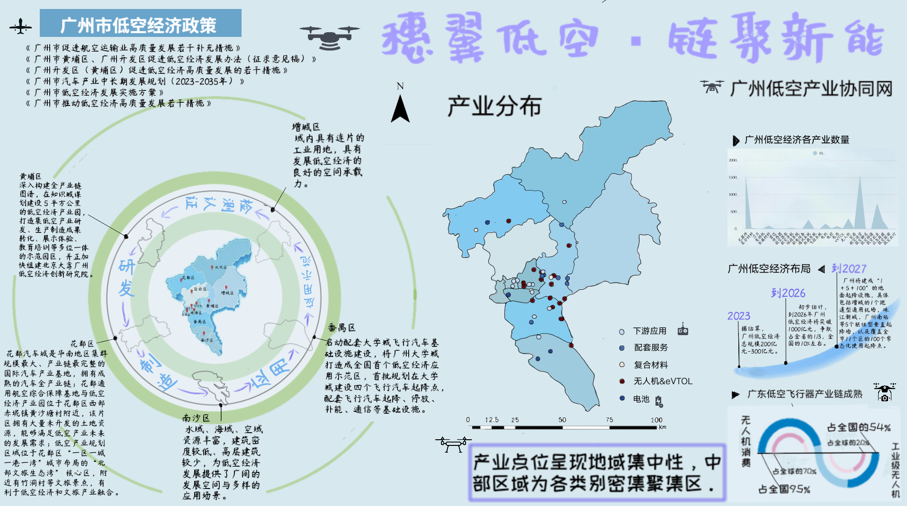
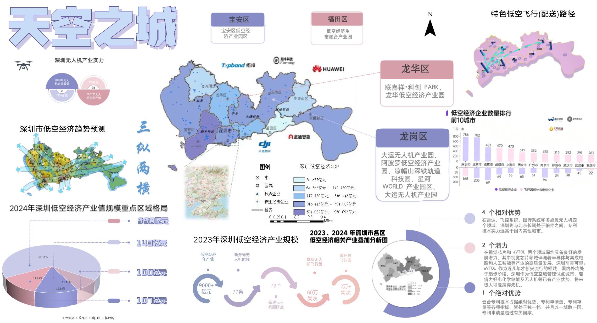
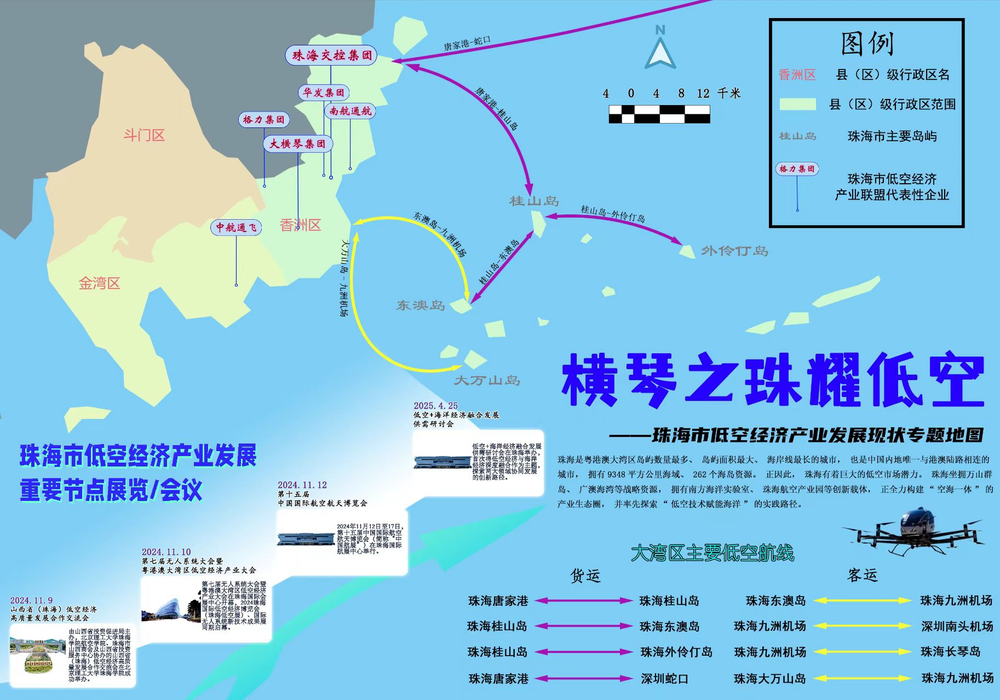
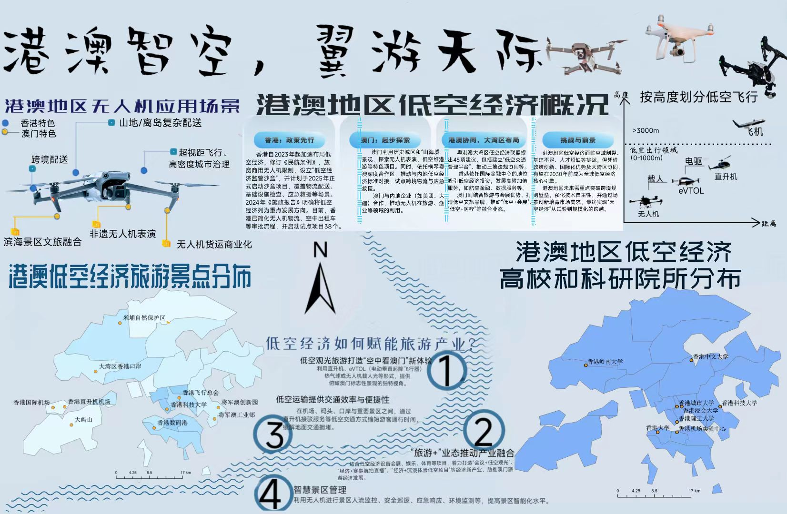
本图题为“活力大湾区，魅力新低空”，以三维方式呈现了粤港澳大湾区整体的低空经济发展现状，基于卫星影像和DEM高程栅格整合了产业信息、低空航线以及知名建筑模型等。本作品在 第二届“星湖杯”地图设计大赛 中获得了一等奖。
本图综合呈现了大湾区低空经济产业的经济发展活力和资源分布。本作品为 第23届SuperMap杯高校GIS大赛 的参赛作品之一。
本图展现了广州市各行政区的低空经济产业相关特色，重点关注其在低空制造业方面的分布和优势。本作品为 第23届SuperMap杯高校GIS大赛 的参赛作品之一。
本图重点关注深圳市低空经济产业的经济发展成果，包括了其产业规模区位差异以及未来发展趋势。本作品为 第23届SuperMap杯高校GIS大赛 的参赛作品之一。
本图呈现了珠海市低空经济产业的发展现状，包括了重点的会展成果、低空航线等，重点关注其在大型低空飞行器方面的广泛应用。本作品为 第23届SuperMap杯高校GIS大赛 的参赛作品之一。
本图主要展示了香港地区的旅游景点、高校对于其低空经济发展的重要推动作用，叙述了其低空经济发展概况。本作品为 第23届SuperMap杯高校GIS大赛 的参赛作品之一。
@misc{TangDroneAtlas2025,
title = {Thematic Atlas of the Low-Altitude Economy Industry in the Greater Bay Area},
author = {Haojun Tang and Hui Dao and Lifen Yao and Wenfeng Bu},
year = {2025},
howpublished = {Electronic image (PNG/JPG)},
note = {Created by the authors, using ArcGIS, Adobe Photoshop}
}